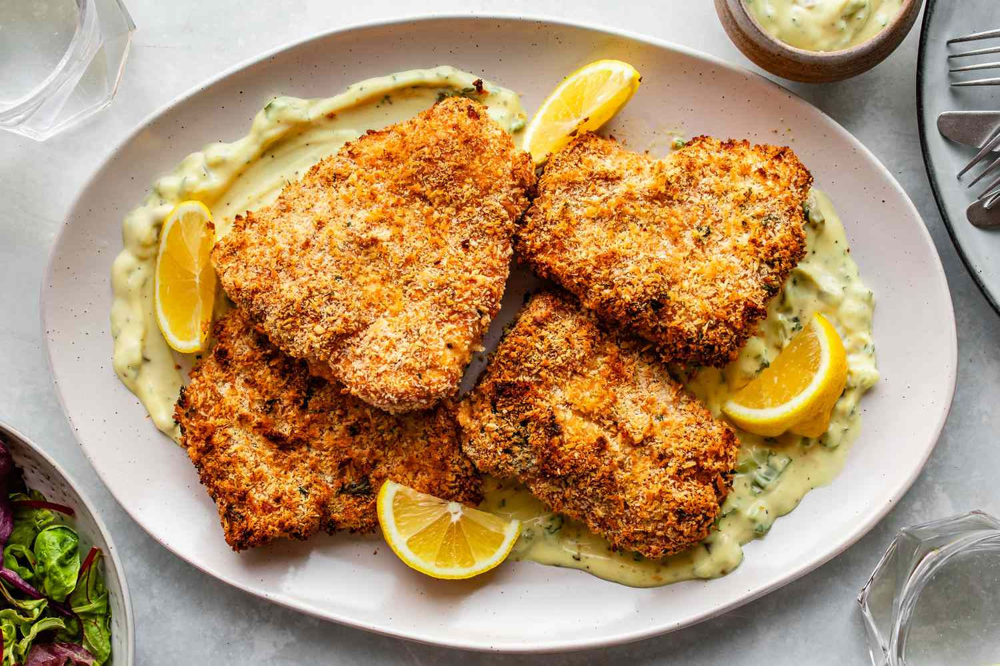

Baked Haddock

Description
This baked haddock recipe is quick and easy to prepare with a Parmesan bread crumb coating, plus it's a nice alternative to deep frying.
Ingredients
- ¾ cup milk
- 2 teaspoons salt
- ¾ cup bread crumbs
- ¼ cup grated Parmesan cheese
- ¼ teaspoon ground dried thyme
- 4 haddock fillets
- ¼ cup butter, melted
Steps
- Preheat oven to 500 degrees F (260 degrees C).
- In a small bowl, combine the milk and salt. In a separate bowl, mix together the bread crumbs, Parmesan cheese, and thyme.
- Dip the haddock fillets in the milk, then press into the crumb mixture to coat.
Place haddock fillets in a glass baking dish, and drizzle with melted butter.
- Bake on the top rack of the preheated oven until the fish flakes easily, about 15 minutes.